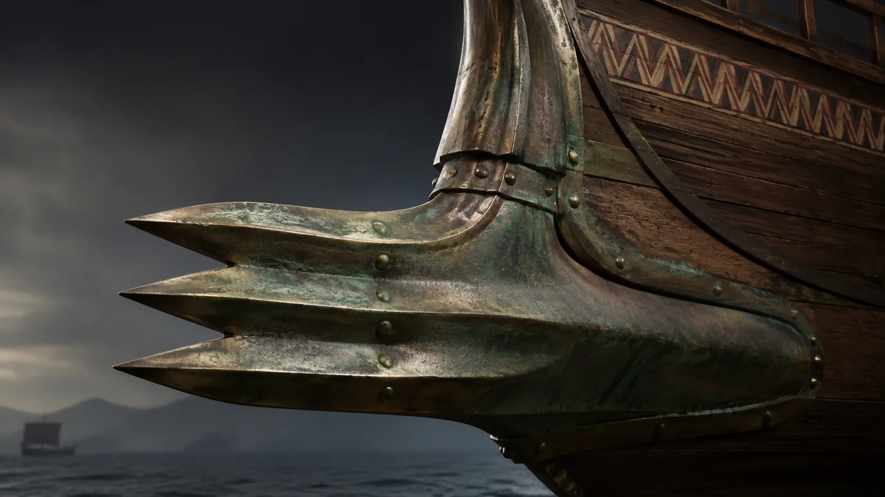
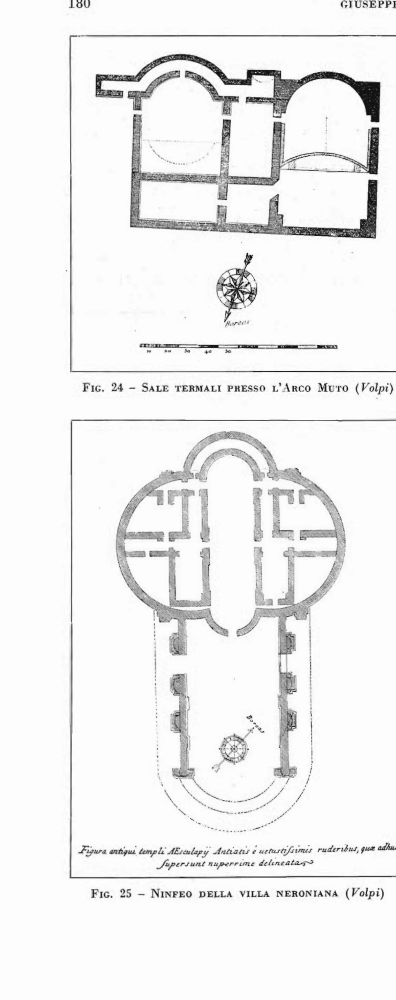
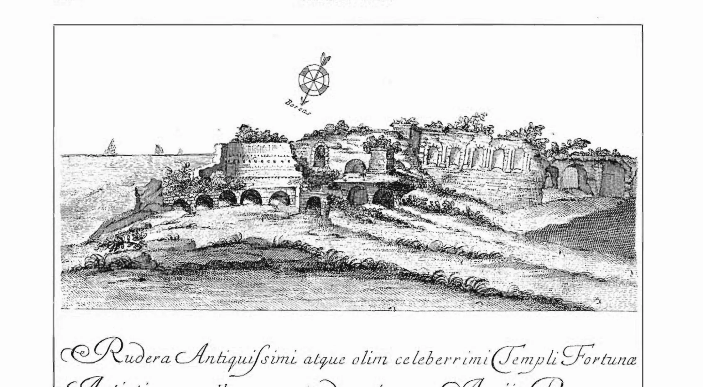

Volsci, Cicerone e gli dèi: Antium raccontata da chi la vide
Pirati volsci, l'esule Coriolano, i rostri strappati alle navi, Cicerone tra i suoi libri e due dee che rispondevano alle domande: dodici secoli di Antium raccontati da chi la vide.
Una parola di Roma nata su una spiaggia di Anzio
Quando a Roma un oratore parlava al popolo, saliva sui Rostra. Quel nome è partito da qui. Nel 338 a.C. Roma strappò alle navi di Anzio i loro speroni di bronzo, i rostri, e li inchiodò alla tribuna del Foro come trofeo. Rimasero lì per più di mille anni. Ma prima di quel giorno di resa Anzio aveva alle spalle secoli di guerra, di pirateria e di orgoglio. Chi erano questi marinai, che Roma volle umiliare davanti a tutti?
Tre leggende per un nome
Chi avesse fondato Anzio, gli antichi non lo sapevano. E litigavano. Lo storico greco Xenagora (lo cita Dionigi di Alicarnasso) tirava in ballo Anteia, figlio nientemeno che di Ulisse e della maga Circe. Solino preferiva Ascanio, il figlio di Enea, che in un colpo solo avrebbe fondato Anzio, Alba Longa e Fidene. Altri andavano sul concreto: Antium verrebbe dal latino antrum, «caverna», forse per qualche riparo nella roccia.
Nel 1819 Antonio Nibby arrivò ad Anzio a cavallo, dopo aver attraversato la grande selva della costa. Mise in fila tutte queste storie e notò un'assenza: Virgilio, nell'Eneide, Anzio non la nomina mai. Per Nibby era il segno di una città nata dopo la guerra tra Enea e Turno. La sua conclusione regge ancora oggi. Tutte le versioni portano a poco dopo la guerra di Troia, ma in quella nebbia di racconti «vano sarebbe voler trovare la verità».
I pirati che fecero di Anzio la loro capitale
Tra la fine del VI e l'inizio del V secolo a.C. arrivarono i Volsci, un popolo italico che i Romani descrivevano «più bellicoso nel ribellarsi che nel condurre una guerra». Un complimento a metà. Presero Velletri e Satrico, poi Anzio, e ne fecero la loro capitale. Vivevano di mare: navigazione, e pirateria «praticata fino al Mar Egeo». Le navi partivano da un porto che chiamavano Caenon, cioè «nuovo», o forse «fango» (sul nome gli studiosi non sono d'accordo).
Attorno al 509 a.C., appena cacciati i re, Roma e Cartagine firmarono il loro primo trattato. Lo storico greco Polibio ce lo ha conservato. Tra le città della costa laziale c'è anche Anzio: uno scalo dove i Cartaginesi potevano commerciare, ma entro limiti precisi. Prima ancora di essere conquistata, insomma, Anzio era un nome che a Cartagine conoscevano bene. Quanti porti del Lazio potevano dire lo stesso?
All'inizio, con Roma, non era solo guerra. Sotto Tarquinio il Superbo, Anzio ed Ecetra furono le sole città volsche ad aderire alle Ferie Latine, la grande festa che il re imponeva ai popoli del Lazio. Cacciati i Tarquini, gli Anziati mandarono truppe in aiuto degli Aricini contro Arunte (il figlio del re etrusco Porsenna), anche se erano già legati a Roma da quel trattato. Alleati riluttanti, sudditi ribelli, poi di nuovo nemici: per quasi due secoli Anzio e Roma si guardarono in cagnesco.
Ma che Stato era, quello dei Volsci? Ci provò a rispondere Winckelmann, il padre della storia dell'arte antica, nell'opera che l'abate Carlo Fea tradusse e pubblicò nel 1783. Il governo era aristocratico, come quello degli Etruschi; un re, cioè un capo dell'esercito, lo eleggevano solo quando c'era guerra. In pace si reggevano come Sparta e Creta. Quanti fossero, scriveva, lo dicevano ancora «le frequenti rovine di città distrutte, che sui vicini colli s'incontrano». Quanto fossero forti, lo diceva un conto: per piegarli Roma dovette celebrare ventiquattro trionfi. Gente numerosa, ricca e libera, «circostanze favorevolissime al progresso delle arti». Eppure di quell'arte non ci è arrivato quasi nulla.
Coriolano, l'esule che voleva distruggere Roma
Per un secolo e mezzo Anzio e Roma si fecero la guerra. La storia più famosa ha per protagonista un romano. Caio Marzio Coriolano, cacciato in esilio dalla sua città, venne a rifugiarsi proprio qui, in casa del nobile Attio Tullio. Insieme portarono i Volsci contro Roma, e Coriolano arrivò a minacciarla da vicino. Lo fermarono le donne romane, con in testa sua madre Veturia. Tornato ad Anzio fu processato e ucciso nel foro della città, per ordine dell'uomo che lo aveva ospitato.
Poi le battaglie, una dietro l'altra. Nel 484 a.C. gli Anziati vinsero con un trucco vecchio come la guerra: finsero di ritirarsi, poi si voltarono e colpirono. Nel 468 toccò a Roma. Il console Tito Quinzio Capitolino Barbato devastò gli arsenali del porto, e l'anno dopo Roma ci mandò i suoi coloni. Non bastò: ci vollero altri centotrent'anni per piegare Anzio davvero.
La resa del 338 e i rostri nel Foro
La fine arrivò nel 338 a.C., durante la Guerra Latina, con la battaglia del fiume Astura. I consoli Lucio Furio Camillo e Caio Menio distrussero o catturarono la flotta anziate. Agli Anziati fu vietato il mare, l'unica cosa che sapevano fare meglio dei Romani, e in città arrivò una colonia romana. Gli speroni delle navi bruciate presero la strada di Roma e finirono sulla tribuna degli oratori, che da allora si chiamò Rostra. Menio ebbe anche la sua colonna nel Foro, la Columna Maenia. Nel 317 a.C. Anzio divenne municipio romano: una città con i suoi magistrati, ma sotto le leggi di Roma.

Tre colonie in tre secoli
Di coloni, ad Anzio, Roma ne mandò tre volte, in tre secoli diversi. La prima fu nel 467 a.C., subito dopo la vittoria di Quinzio. E non fu facile trovare chi partisse: la plebe romana la colonia la sentiva come un esilio, non come un premio, e alla fine si dovettero aprire le liste a Latini ed Ernici. Agli Anziati rimasti fu lasciata una parte delle terre. La seconda volta fu con la resa del 338: solo cittadini romani, e i vecchi anziati iscritti nelle tribù Mecia e Scapzia (le circoscrizioni in cui si votava a Roma).
La terza la volle Nerone, che ad Anzio era nato. La città era uscita quasi cancellata dal sacco di Caio Mario, e lui ci insediò veterani della guardia imperiale, i pretoriani, insieme a ricchi centurioni di primo rango, i primipili. Sulle monete di quegli anni c'è il suo nome ufficiale: COLONIA ANTIVM.
Cicerone, che ad Anzio veniva a stare bene
Se vuoi sapere com'era Anzio nel I secolo a.C., leggi le lettere di Cicerone. All'amico Attico confessa che qui sta più volentieri che in qualsiasi altro posto. Il suo pensiero fisso è la biblioteca della villa, e per metterla in ordine chiede rinforzi: prima arriva il liberto Tirannione, poi due copisti, Dionisio e Menofilo. Nelle lettere ci sono anche i giochi dei primi di maggio (e i combattimenti di gladiatori, che gli sembrarono belli).
Cicerone scrive che la sua villa sta dentro la città, cioè ancora chiusa dal vecchio vallo. Quando Attico cerca casa, gli risponde che in campagna non trova niente di costruito; in città invece qualcosa c'è, e proprio accanto alla sua. A metà del I secolo a.C., insomma, Anzio era ancora una città murata. E Attico, alla fine, comprò? Le lettere non lo dicono.
Un acquedotto e i quadri della Macedonia
Un secolo prima di Cicerone, nel 170 a.C., il pretore Caio Lucrezio portò ad Anzio l'acqua del fiume Loracina con un acquedotto. Poi, con i quadri razziati in Macedonia, decorò il santuario di Esculapio, il dio della medicina.
Dove fosse quel santuario, oggi nessuno sa dirlo. Nel 1847 Francesco Lombardi credeva ancora di vederlo: chi da Anzio andava a Nettuno, scriveva, trovava «al lato sinistro del porto Innocenziano, presso la spiaggia» gli avanzi del «vetustissimo tempio di Esculapio». E raccontava la leggenda del serpente sacro venuto da Epidauro. Sorpreso da una tempesta, sbarcò qui, salì su un mirto piantato nell'atrio e ci restò tre giorni, prima di riprendere il mare verso Roma. Le rovine di Lombardi, però, gli archeologi venuti dopo non le hanno più trovate.
Un indizio sta nei versi di Ovidio, che la sosta del serpente la racconta. Ad Anzio, scrive, il serpente entra nel tempio del padre (Apollo, padre di Esculapio) «che tocca la spiaggia bionda». Il topografo Giuseppe Lugli ne ricavò che il sacro, qui, stava sul mare, nell'area del porto.
E la pianta che il gesuita Volpi pubblicò nel 1726 come «tempio di Esculapio»? Per Lugli è un'«arbitraria attribuzione», e l'edificio somiglia piuttosto a un ninfeo, una fontana monumentale. Alessandro Maria Jaia è andato oltre. Basta girare il disegno di novanta gradi per riconoscerci l'edificio che Bianchini chiamava teatro: un settore delle terme della villa imperiale. Del tempio di Esculapio non abbiamo neanche una pianta.

Gli dèi di Antium
La Fortuna che dava i suoi oracoli
Il culto più importante di Anzio era quello della Fortuna. Era antichissimo, parente di quello famoso di Palestrina. Orazio, in un'ode, le affida Cesare Augusto in partenza per la Britannia. I cavalieri romani la pregano per la salute di Livia, come Fortuna Equestre. E quando Poppea aspetta un figlio da Nerone, le immagini delle due Fortune, quella di Palestrina e quella di Anzio, salgono fino al tempio di Giove in Campidoglio: devono proteggere il parto.
Le Fortune di Anzio erano due, e parlavano. Chi le interrogava aveva la risposta per sorteggio: si estraevano tavolette o astragali, piccoli ossi da gioco. Il santuario stava forse dove poi sorse il convento di San Francesco a Nettuno, dove nel 1585 venne fuori un'iscrizione di dedica. La risposta più famosa la ebbe Caligola. Le Fortune gli dissero di guardarsi da Cassio, e l'imperatore ordinò di uccidere Cassio Longino, governatore d'Asia. Sbagliò Cassio. Nel 41 d.C. a pugnalarlo fu Cassio Cherea, un ufficiale della sua stessa guardia.
Macrobio, erudito di età tardoantica, giura di aver visto con i propri occhi le statue della Fortuna muoversi mentre davano i responsi. Che cosa vide davvero? Un congegno, o una messa in scena dei sacerdoti: non possiamo dirlo. Il suo racconto pesa per un'altra ragione, che già Nibby aveva colto. Se Macrobio poteva ancora assistere all'oracolo, il tempio funzionava fino a tarda età imperiale, probabilmente fino al 391, quando l'editto di Teodosio chiuse i santuari pagani. La Fortuna di Anzio fu tra le ultime dee d'Italia a smettere di parlare.
Il tempio, quello vero, nessuno l'ha mai trovato. Lugli nel 1940 passò al setaccio tutte le proposte e fu spietato: il luogo «resta completamente ignoto». Gli edifici che il Volpi aveva inciso come «celeberrimi templi della Fortuna» non hanno «l'aspetto di tempio», e sembrano piuttosto magazzini del porto. Villa Albani, come voleva il Tomassetti? «Una semplice supposizione». Le rovine di villa Spigarelli? Hanno «il carattere di una costruzione privata».
L'unico indizio vero salta fuori nel 1879, nell'orto di Francesco Perucci, poco lontano dal cosiddetto Sepolcro di Coriolano: una grande stipe votiva di terrecotte, cioè un deposito di offerte. Ma tutta in frantumi e fuori posto, «scaricata da una località più alta». Il tempio era dunque lassù, da qualche parte sul ciglio del pianoro. Più vicino di così, per ora, non si arriva.
Di depositi così, in città alta, ce n'era più d'uno. Jaia li ha censiti, e le indagini recenti sul pianoro delle Vignacce hanno ripreso il suo elenco: almeno quattro punti diversi. Uno presso villa Spigarelli. Uno nella proprietà Jacobelli, all'incrocio fra via delle Mimose e via Coriolano. Uno vicino a via Enea, saltato fuori mentre si scavavano le fondamenta di una palazzina. L'ultimo tra via Roselle e via Anteo, sotto l'Istituto Don Orione, con materiali che oggi sono al Museo Nazionale Romano. Il sacro, qui, non stava in un punto solo: correva lungo tutto il ciglio del pianoro, sopra il mare.

Venere e il suo campo di offerte
Ad Anzio si pregava anche Venere Afrodisia. Nel suo campo sacro i fedeli portavano uva e fichi, olive, focacce; alle pareti del tempio appendevano le tavolette per ringraziare. Dove fosse di preciso non si sa: le fonti lo mettono tra il faro e l'Arco Muto.
Anche qui le parole dei viaggiatori dicono più delle pietre. Nel 1847 Lombardi vedeva ancora, «dalla parte occidentale del porto Neroniano», le «non basse rovine del tempio di Venere Afrodisea». E ricordava il primo santuario di Afrodite, vicino ad Ardea: attorno c'era un campo per i pellegrini che ai suoi tempi chiamavano «Campo femini», presso la torre dell'Ajanico. Lì nel 1794, riferisce Carlo Fea, gli scavi tirarono fuori «un bel simulacro di quella Dea». Il gesuita Volpi immaginava nel tempio di Anzio anche un sacrario di Marte, perché dalle rovine era uscita un'iscrizione a Marte vincitore. Delle «non basse rovine» oggi non resta in piedi niente di riconoscibile.
Nettuno, Salacia e il dio venuto dall'Oriente
In una città di mare non poteva mancare Nettuno, con la sposa Salacia, dea delle acque calme. E poi, a sorpresa, un dio venuto dalla Persia: Mitra. Nel 1699 gli uomini di Innocenzo XII scavavano tra i ruderi della città antica per ricavarne materiale per il porto nuovo. Tornò alla luce una lastra di marmo bianco, poco più di mezzo metro, scolpita fra il II e il III secolo d.C.
Lo scultore ci ha messo la scena di sempre. Mitra, col berretto frigio e il mantello gonfiato dal vento, afferra il toro per il muso e gli affonda la spada nella spalla, ma volta la testa verso il Sole. Ai lati due ragazzi con la fiaccola: Cautes la tiene alzata, sotto il busto del Sole, Cautopates la abbassa, sotto la Luna.
In basso un serpente e un cane corrono a bere il sangue, uno scorpione stringe nelle chele i genitali del toro, e la coda dell'animale finisce in spighe di grano: dalla morte nasce la vita. Oggi quel marmo è al Museo Lapidario Maffeiano di Verona. Era un dio di soldati, diffuso in tutto l'Impero. Anche nella piccola colonia di mare qualcuno lo pregava.
Di templi di Nettuno Lombardi ne conosceva due. Uno stava dove oggi c'è il paese che porta il nome del dio. Lì i naviganti tornati a casa avevano lasciato «i molti marmi e tavole votive colà scoperti». L'altro, romano, stava vicino alla villa imperiale, sul ripiano dell'allora villa Mencacci. Gli scavi tirarono fuori trentadue capitelli di marmo e una fila di basi di colonne ancora al loro posto. Tutto, basi a parte, era «offeso dall'azione di un incendio distruttore».
Quei capitelli parlavano di mare. Dalle tazze scolpite si alzavano delfini che, inarcando la coda, formavano le volute; e al centro, al posto del solito fiore, «una graziosa conchiglia avente nel grembo un granchio marino». Per Lombardi non c'erano dubbi sulla dedica al dio del mare. Dei trentadue capitelli, oggi, si è persa ogni traccia.
Dallo stesso santuario, ricordano gli antiquari, vengono tre altari scolpiti a forma di prua. Sul primo c'è Nettuno in persona, un delfino a destra e il tridente a sinistra: Ara Neptuni. Sul secondo una nave a vele spiegate che corre tranquilla: Ara Tranquillitatis, l'altare della Calma. Sul terzo Eolo, re dei venti, in volo mentre suona la buccina, una specie di corno: Ara Ventorum. Calma e vento buono, quello che serve a chi va per mare, qui avevano la loro pietra. I tre altari, si racconta, finirono al Museo Capitolino, nella sala del Fauno.
I fedeli di Mitra, dove si riunivano? Un'altra domanda aperta. Gli antiquari dal Cinque al Settecento (Volpi, Ligorio e monsignor Della Torre, riportati da Lombardi) pensavano alle latomie dell'Arco Muto: le vecchie cave di arenaria del promontorio, lunghe grotte collegate da corridoi bassi e stretti, dove nel Seicento si era trovato il rilievo del dio.
Filippo Della Torre, che il rilievo lo pubblicò nel 1700, guardava anche più in basso. Vicino al punto del ritrovamento, dove finiva l'antico arsenale e il terreno risale verso la città, vedeva «luoghi cavernosi e recessi interni», e ci riconosceva senza fatica una grotta di Mitra. Suggestioni, non prove. Il mitreo di Anzio resta da trovare.
Iside, Anubi e gli dèi venuti dall'Egitto
Mitra non fu il solo dio straniero a sbarcare in porto. Dagli scavi e dai vecchi sterri nelle ville di Anzio è venuta fuori, pezzo dopo pezzo, una piccola galleria di dèi egizi: come in ogni grande scalo, anche qui arrivavano i culti del Nilo. Il pezzo più bello è un Anubi di marmo, il dio dalla testa di cane, vestito però da Mercurio, con il caduceo e il sistro in mano. Saltò fuori nel 1749 nella villa Pamphilj, oggi villa Adele, e dal 1838 è al Museo Gregoriano Egizio, in Vaticano.
Con lui, in tre secoli, sono riemersi una testa di Iside coronata di torri, un busto di Serapide e un sacerdote egizio dal cranio rasato (la statua è finita in Inghilterra). E un rilievo, oggi al Louvre, dove un liberto di nome Agatemero ringrazia gli dèi per averlo riportato a casa sano e salvo dal mare. Da dove tornava? Il marmo non lo dice.
Un grande tempio egizio pubblico, ad Anzio, gli archeologi non lo cercano più. Pensano piuttosto a cappelle private, piccoli altari di famiglia dentro le ricche ville della costa.
E un filo lega tutto questo alla dea più anziate di tutte. A Delo e a Palestrina Iside si era già fusa con la Fortuna, come protettrice dei naviganti. Ad Anzio, dove la Fortuna era doppia, madre e oracolo proprio come Iside, il passo era breve. Chi scolpì una testa femminile colossale trovata all'Arco Muto, e una Fortuna in trono da villa Spigarelli, copiò lo stesso modello: la grande Fortuna di Palestrina. Su questa spiaggia Iside la viaggiatrice e la Fortuna del mare finivano per somigliarsi.
Gli dèi minori di una città di mare
Le iscrizioni raccolte da Lugli aggiungono una piccola folla di dèi che nessuna rovina racconta più. Cerere Anziatina aveva un santuario, e lo dice una dedica dell'85 d.C., finita anche lei a Verona, al Museo Maffeiano. La Speranza imperiale aveva i suoi sacerdoti, gli Augustali. E poi la Calma e i Venti, divinizzati e pregati ciascuno col suo altare: culti che solo un popolo di naviganti poteva prendere così sul serio. C'è infine un grosso pezzo di architrave con il nome di Adriano, che parla del restauro di un tempio. Quale? Non lo sapremo finché il marmo non ritroverà il suo edificio.
Satricum, la città-figlia, e la dea che non bruciava
Anzio non fu solo conquistata: a sua volta conquistò. Nei suoi anni migliori mandò una propria colonia nell'entroterra, a Satricum, nella località che oggi si chiama Conca, tra Nettuno, Velletri e Cisterna. Per generazioni fu la piazzaforte dei Volsci lontano dal mare.
Lì c'era un tempio famoso della Mater Matuta, la dea dell'aurora e dei porti, e attorno a quel tempio gli Anziati raccontavano con orgoglio una storia. Ogni volta che i nemici davano fuoco alla città, il santuario restava intatto in mezzo al rogo: dal fondo del tempio uscivano «voces horrendae», voci tremende, e l'incendio appiccato dai Latini si fermava. Vero o no? Il racconto dice comunque quanto questa gente di mare credesse nei suoi dèi.
La sua storia fu un continuo cambio di padrone. Secondo le fonti la prese Coriolano; poi i Latini la ripresero e la incendiarono; poi tornò agli Anziati. Un passaggio di mano dopo l'altro, nel giro di pochi decenni: la fotografia della guerra senza fine del Lazio del sud. Alla fine Roma la rase al suolo, per punirla di essersi schierata con i Sanniti.
Dov'era il cuore della città?
Le strade più antiche si incontrano nella valletta tra Villa Sarsina e Villa Albani. Lì gli studiosi pensano di aver trovato l'area del foro, la piazza della città. Lo fanno pensare le costruzioni monumentali sotto le case del quartiere, la linea del circo che ci passa accanto, la discesa al porto dall'antica porta. E il colle di Villa Sarsina, dove oggi c'è il Municipio? Poteva essere l'acropoli, la parte alta e difesa, forse con un tempio di Ercole: lo stesso Ercole a cui rimanda l'elegante «Ninfeo di Ercole» di età neroniana, oggi al Museo Civico. La piazza, però, nessuno l'ha ancora vista. La si ricava da quello che le sta intorno, come il contorno di un oggetto tolto da un tavolo impolverato.
Cronologia storica essenziale
| Data | Evento | Fonte |
|---|---|---|
| Fine VI sec. a.C. | Sotto Tarquinio il Superbo, Anzio ed Ecetra sono le sole città volsche ad aderire alle Ferie Latine | Dionigi (in Nibby 1819) |
| c. 509 a.C. | Antium nominata nel primo trattato Roma–Cartagine come scalo a commercio limitato | Polibio III, 22 |
| Fine VI – inizi V sec. a.C. | Occupazione volsca; Antium diventa caput Volscorum | Livio, Dionigi |
| 489–488 a.C. | Saga di Coriolano; guerra contro Roma | Plutarco, Dionigi VIII |
| 484 a.C. | Vittoria degli Anziati con la finta ritirata | Livio II |
| 468 a.C. | Vittoria di Tito Quinzio Capitolino Barbato; devastazione del porto | Livio II |
| 467 a.C. | Prima colonia latino-ernica dedotta ad Antium | Livio III; Volpi II |
| 338 a.C. | Conquista romana; battaglia del fiume Astura; Rostri al Foro | Livio VIII; Plinio |
| 317 a.C. | Antium diventa municipio romano | Livio IX |
| 170 a.C. | Pretore Lucrezio: acquedotto dal Loracina; santuario di Esculapio | Livio XLIII |
| 56–45 a.C. | Cicerone ad Anzio: villa dentro le mura, biblioteca, giochi | Lettere ad Attico |
| 2 a.C. | Augusto nella villa anziate rifiuta il titolo di Pater Patriae | Svetonio |
| 12 e 37 d.C. | Nascita di Caligola e Nerone nella villa anziate | Svetonio |
| Fine IV sec. d.C. | Macrobio vede ancora «muoversi» le statue della Fortuna nei responsi; l'editto di Teodosio (391) chiude i culti pagani | Macrobio, Saturnalia (in Nibby 1819) |
| 465–501 d.C. | I vescovi di Anzio (Gaudenzio, Felice, Vindemio) ai concili e sinodi romani | Ughelli (in Lombardi) |
| ~470 d.C. | Rostra Vandalica nel Foro: ultima eco di Antium a Roma | CIL VI |
| 537 d.C. | Ultima menzione del porto di Anzio nelle fonti scritte | Procopio, De Bello Gothico |